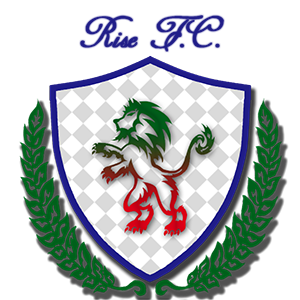

Rise FC 1996
Página oficial

☆14☆
- Campeonato Guachin '16
- Liga Guachina '15
- Copa Alfredo Di Stefano '14
- Liga Guachina '13
- Copa Guachina '13
- Copa Guachina '13
- Liga Guachina '13
- Campeonato Guachin '12
- Liga Guachina '12
- Mundial de Clubes '10
- Copa de Europa '10
- Liga Master '10
- Copa de Europa '09
- Liga Master '09
2009 - 2018